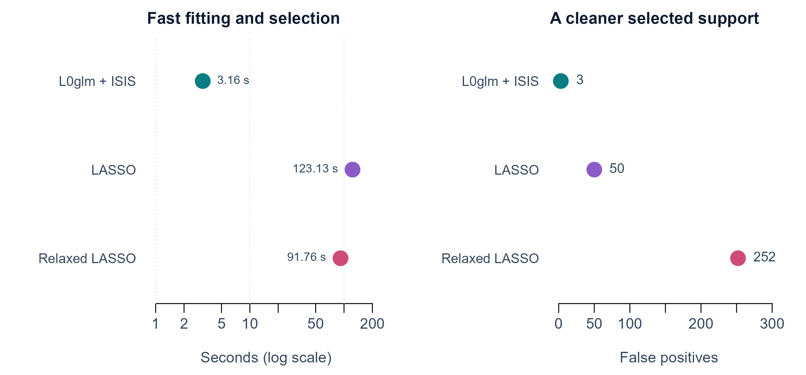

Speed, support recovery and reproducible benchmarks
Source:vignettes/articles/performance.Rmd
performance.RmdL0glm’s shrinking active set, compiled solvers and fast GIC preset can deliver striking gains in both speed and support recovery. These examples compare complete fitting and selection workflows, with the tuning rule stated for every method. The tables are generated by the repository’s reproducible README benchmark.
One million predictors
The design has 500 observations, one million standard-normal predictors and 60 nonzero coefficients of either sign. L0glm uses GIC-preset ISIS plus a relaxed refit. LASSO and fully relaxed LASSO are tuned by BIC or five-fold CV.
| Method | Selection | Seconds | GIC | TP | FP | FN | TN | F1 | MCC |
|---|---|---|---|---|---|---|---|---|---|
| L0glm + ISIS | GIC preset | 3.16 | 2583 | 40 | 3 | 20 | 999937 | 0.777 | 0.787 |
| LASSO | BIC path | 22.75 | 14789 | 23 | 612 | 37 | 999328 | 0.066 | 0.118 |
| Relaxed LASSO | BIC path | 21.42 | 10588 | 21 | 453 | 39 | 999487 | 0.079 | 0.124 |
| LASSO | 5-fold CV | 123.13 | 4309 | 17 | 50 | 43 | 999890 | 0.268 | 0.268 |
| Relaxed LASSO | 5-fold CV | 91.76 | 7413 | 20 | 252 | 40 | 999688 | 0.120 | 0.156 |

Complete-workflow timings and false positives in the million-predictor example. L0glm uses a GIC preset; both LASSO methods use five-fold CV.
In this simulation L0glm is 39 times faster than five-fold-CV LASSO and recovers more true effects with fewer false positives. The L0glm timing includes screening and one preset fit; the other methods evaluate up to 40 native path values, with paths refitted in each CV training fold. BIC is shown alongside CV because GIC can select a null LASSO model at this dimension. All rows retain GIC as a common evaluation score. Five-fold comparisons use the same random folds.
Simulation is excluded from timings. The documented run uses one BLAS thread and eight screening threads; the design is held in memory. See the million-predictor tutorial for the complete data setup.
Single-channel deconvolution
A 500-predictor blurred Poisson spike train contains 50 events. All fitted models are scored using the original Poisson likelihood and GIC.
| Method | Seconds | GIC | TP | FP | FN | TN | F1 | MCC |
|---|---|---|---|---|---|---|---|---|
| L0glm | 0.06 | 4824 | 43 | 5 | 7 | 445 | 0.878 | 0.864 |
| ABESS | 1.14 | 7616 | 31 | 16 | 19 | 434 | 0.639 | 0.601 |
| LASSO | 0.28 | 6001 | 48 | 88 | 2 | 362 | 0.516 | 0.515 |
| Relaxed LASSO | 0.16 | 5323 | 45 | 31 | 5 | 419 | 0.714 | 0.694 |
L0glm uses one GIC preset; glmnet searches ten lambda values. ABESS searches integer support sizes with warm starts. For identity-link Poisson data, alternative backends use explicitly labelled weighted-Gaussian approximations; L0glm fits the Poisson likelihood directly.
Multichannel deconvolution
The grouped example contains 25 active predictor rows. Spectra are sparse within rows. Row metrics measure event recovery; within-row metrics are calculated among correctly recovered true-positive rows.
| Method | Seconds | GIC | TP | FP | FN | Row F1 | Row MCC | Within-row F1 | Within-row MCC |
|---|---|---|---|---|---|---|---|---|---|
| L0glm | 0.48 | 118549 | 25 | 0 | 0 | 1.000 | 1.000 | 0.946 | 0.913 |
| ABESS | 2.00 | 127603 | 22 | 3 | 3 | 0.880 | 0.874 | 0.846 | 0.763 |
| LASSO | 3.73 | 130115 | 24 | 11 | 1 | 0.800 | 0.800 | 0.863 | 0.789 |
| Relaxed LASSO | 21.63 | 122388 | 25 | 1 | 0 | 0.980 | 0.980 | 0.880 | 0.809 |
L0glm recovers every event row without false positives in this example, and also gives the strongest within-row sparsity recovery. Grouped Gaussian approximations use shared observation-row weights, while L0glm uses channel-specific Poisson working weights. The deconvolution tutorial shows the signal, coefficient and heatmap comparisons with every simulated channel retained.
Native validation and OpenMP
Native validation scoring preserves multichannel OpenMP and returns the same checkpoint models as the R-validation path. This reproducible test uses 1,000 predictors, 16 channels, 60 active rows and an independent Poisson replicate for validation. Median times are from five fits, with one BLAS thread.
| Backend | Outcome threads | Seconds | Validation deviance | GIC | F1 | MCC |
|---|---|---|---|---|---|---|
| General R | 1 | 1.12 | 0.357612 | 42728.05 | 0.944882 | 0.942790 |
| Native | 1 | 0.08 | 0.357612 | 42728.05 | 0.944882 | 0.942790 |
| Native | 2 | 0.06 | 0.357612 | 42728.05 | 0.944882 | 0.942790 |
| Native | 4 | 0.04 | 0.357612 | 42728.05 | 0.944882 | 0.942790 |
| Native | 8 | 0.04 | 0.357612 | 42728.05 | 0.944882 | 0.942790 |
Run benchmark_native_validation.R to reproduce this comparison. Results agree across thread counts; validation predictors are shared across workers. Paired 10,000-predictor tests also preserve the unvalidated fit, with 16-channel timing 0.874 s versus 0.878 s.
Reproduce and extend
- README benchmark source: data generation, comparisons and plots.
- Solver/problem-size benchmark: solvers, families, matrix storage and sizes.
- Single/multichannel benchmark: detailed signal examples and alternative methods.
-
sparseglm(): use the same comparison framework on your own data.
Timings measure complete workflows on a Windows workstation with OpenBLAS and will vary with hardware and tuning choices. F1 and MCC evaluate the known simulated support; it is never used to select models. Likelihood floors and approximation labels are explicit in the benchmark source.